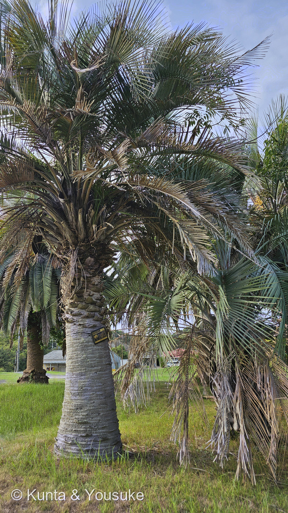
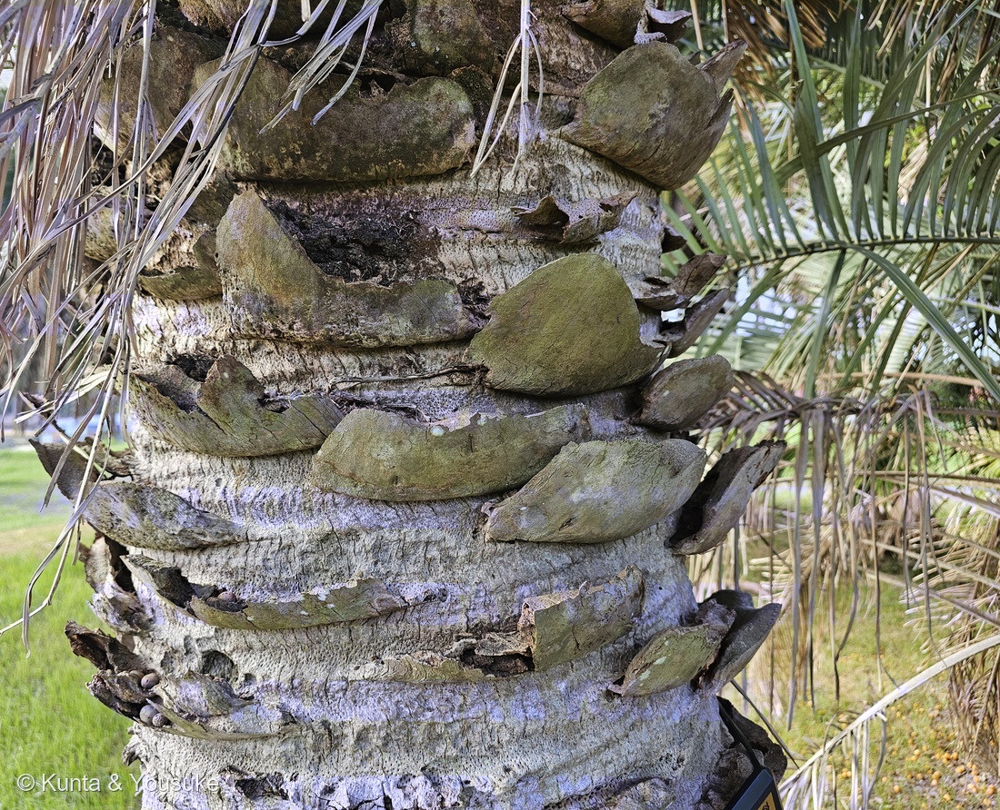
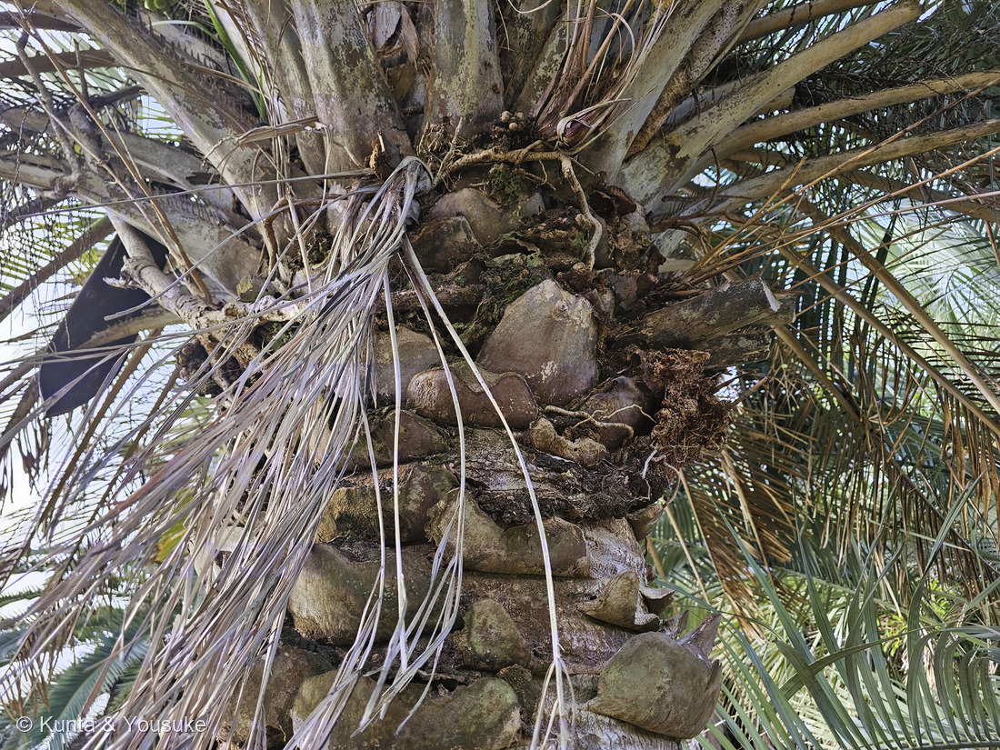
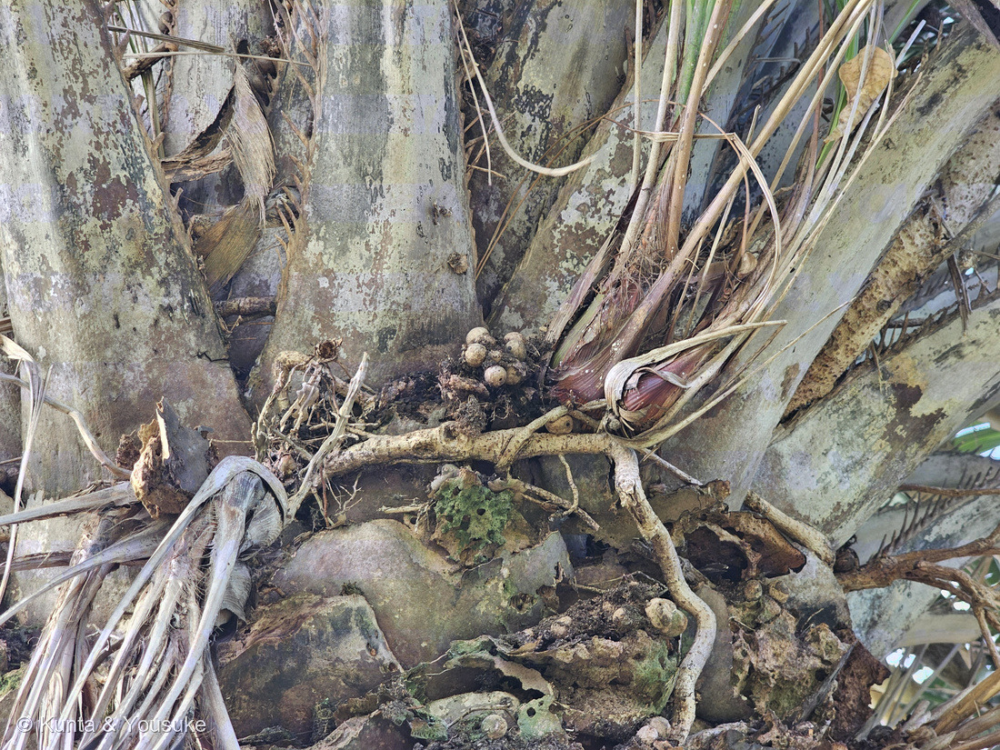
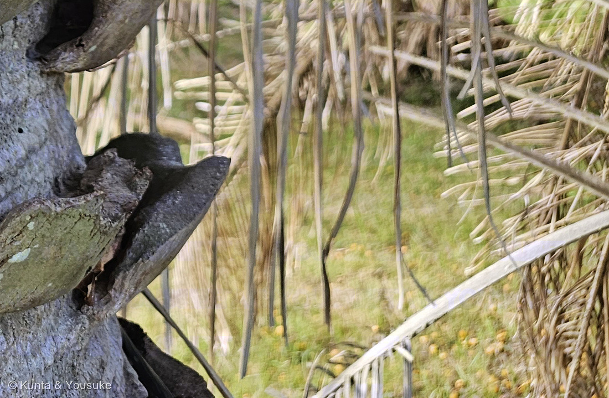
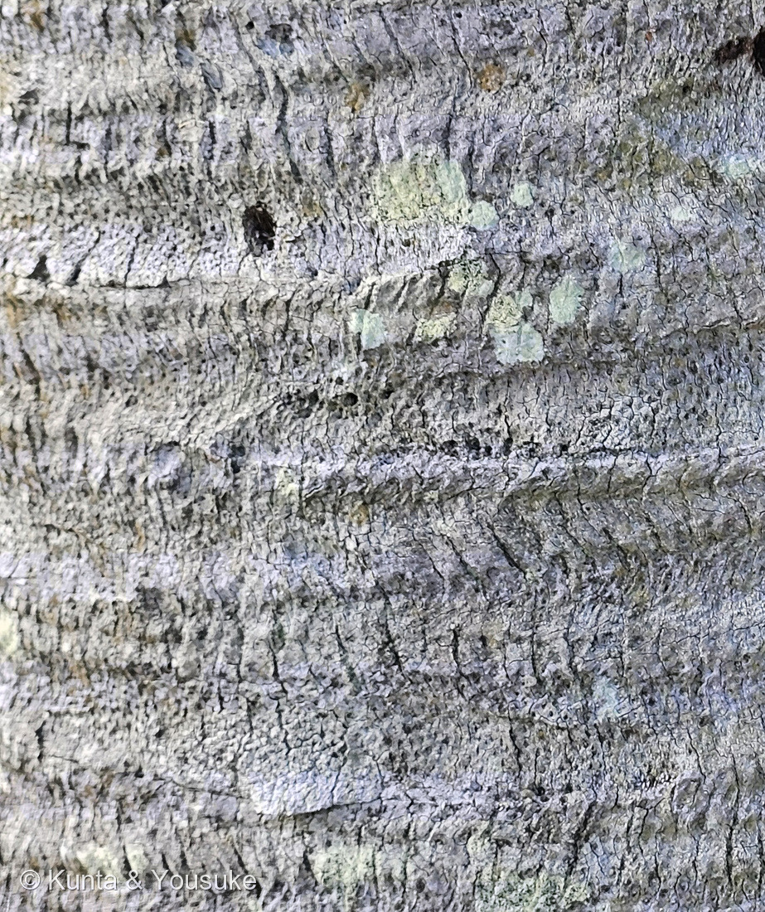

地図を読み込んでいるよ…
🔍 写真も地図も、押しているあいだ拡大して見られるよ（スマホは指を置いてすこし待ってね）。
🌍 の地図＝この子がもともと自生している場所を緑に。南アメリカの南部＝アルゼンチン北東部（エントレ・リオス州など）・ウルグアイ・ブラジル南部（リオグランデ・ド・スル州）。くわしくは下の地図の説明を見てね。
⭐南アメリカの南部の子だよ——アルゼンチン北東部・ウルグアイ・ブラジル南部のサバンナ（英語版Wikipedia＝ブラジルはリオグランデ・ド・スル州、ウルグアイはパイサンドゥ県とリオ・ネグロ県、アルゼンチンはチャコ・コリエンテス・エントレ・リオス・ミシオネス・サンタフェの各州）。⚠地図は3つの国をまるごと緑にしているけれど、ほんとうの自生地は3国が寄りあう、ウルグアイ川とパラナ川のまわりの狭い一帯だけ＝⭐ブラジルなら南のはしの州ひとつ、アルゼンチンなら北東の数州。⭐⭐砂地に、ほとんどこの一種だけの古い林（パルマル）を作る＝⭐⭐アルゼンチンのエル・パルマル国立公園（1966年創設・8,213ha）は、この林を守るための公園で、木の多くは200年をこえる（Billiken）。⭐属名 Butia はブラジルの土地の言葉（トゥピ語）、種小名 yatay はパラグアイやアルゼンチンのグアラニー語＝⭐名前も、ふるさとの2つの言葉でできている。⚠僕らが会ったのは広島の海岸の公園に植えられた木＝日本には「ココスヤシ」の名で、羽状葉のヤシのなかではいちばん寒さに強い木として植えられている。⭐同じヤシ科の192 ワシントンヤシはアメリカ南西部の砂漠、253 ビロウは東アジアの海岸＝⭐⭐3人めで、ヤシの地図がはじめて南半球にとどいたよ。
⚠ 地図は国（日本と中国だけ県・省）までしか塗れないから、ほんとうの分布より広く見えていることがあるよ。地図はだいたいの場所。正確なところは、上の文を見てね。
ヤタイヤシ
Butia yatay (Mart.) Becc.
別名 · ⭐ココスヤシ（＝1844年の最初の学名 Cocos yatay の名残り）／英名 yatay palm・jelly palm
ヤシ科 · Arecaceae（ヤタイヤシ属 Butia · ヤシ目 Arecales）── ⭐図鑑で3人目のヤシ科（192 ワシントンヤシ・253 ビロウ）／⭐⭐ヤタイヤシ属ははじめて＝⭐図鑑ではじめての「羽状葉」のヤシ／⚠科は増えないので113科のまま
名前と学名の由来 ── 「とげのあるもの」と「小さくてかたい実」
- ⭐⭐属名 Butia＝ブラジルの土地の言葉から。古いトゥピ語の mba atí「とげのあるもの」に由来するとされる（英語版Wikipedia）＝⭐葉柄のふちに並ぶ刺のこと＝⭐⭐写真③で、そののこぎりの歯がちゃんと見える。
- ⭐⭐種小名 yatay＝グアラニー語の yata'i「小さくてかたい実」から（同）。──⭐和名「ヤタイヤシ」は、この種小名をそのまま読んだものだよ。
- ⭐⭐⭐別名「ココスヤシ」は、1844年にマルティウスがつけた最初の学名 Cocos yatay の名残り（green-flower.club／英語版Wikipedia＝基礎異名 Cocos yatay Mart.）＝ココヤシと同じ属に入れられていたんだ。⭐1916年にベッカリが Butia 属に移して、いまの名前になった。⚠1970年にグラスマンが Syagrus 属へ動かし、1979年に自分でもどした、という寄り道もある（同）。
- ⚠名札の学名は「Butia yatai」と刷られている＝⭐正しいつづりは yatay（GBIF）。──⭐名札は作られたころの手で書かれたものだから、実物どおりに写して、正しいほうを並べておくね（262・310と同じ形）。
この植物のこと
- ヤシ科ヤタイヤシ属の常緑高木。⭐図鑑で3人目のヤシ科、はじめての羽状葉のヤシ＝192 ワシントンヤシと253 ビロウは手のひらの形（掌状葉）だったけれど、この子は鳥の羽の形（羽状葉）。
- ⭐幹は3〜16m（まれに18m）・直径30〜55cm、古い葉の付け根が何年も残る。葉は11〜31枚がらせんに出て、葉柄は40〜130cm、ふちに最大4cmの歯、小葉は63〜78枚で、V字に対になってつく（英語版Wikipedia）。⭐属のなかでいちばん背が高い種とされる（同）。
- ⭐⭐実は卵形で長さ2.7〜4.2cm、重さ8〜23g、黄・橙・赤・紫と色はいろいろ、果肉は黄色く甘くて多汁、すこし繊維がある（同）＝⭐英名 jelly palm（ゼリーのヤシ）はこの実から＝川崎みどり研究所も「実は暗黄〜橙赤色で食べられる」と書く。⚠公園の木なので、僕らは見るだけ。
- ⭐⭐ふるさとはアルゼンチン北東部・ウルグアイ・ブラジル南部のサバンナ＝砂地に、ほとんど一種だけの古い大きな林を作る（英語版Wikipedia）。⭐⭐アルゼンチンのエル・パルマル国立公園（1966年創設・8,213ha）は、この木の林を守るためにできた公園（argentina.gob.ar）＝⭐そこの木は「多くが200年をこえる」（Billiken）。
- ⭐⭐羽状葉のヤシのなかではいちばん寒さに強い（川崎みどり研究所「海岸部なら東北地方南部でも可能」）＝だから日本の公園や庭に「ココスヤシ」の名でよく植えられる。⭐成長はカナリーヤシよりおそく、枯れ葉を取りのぞくほかは手がかからない（同）。
同定について ── 属は写真で・種は名札で

2026.09.12・大串海岸の公園 ⚠ピンぼけだけれど、実が落ちている記録として。🔍 押しているあいだ拡大して見られるよ。
- ⭐⭐属（Butia）は写真で決まる＝①強く弓なりに垂れる灰緑の羽状葉（写真①）②⭐⭐葉柄のふちに並ぶ刺（写真③＝英語版Wikipedia「葉柄の縁は最大4cmの歯で武装」＝⭐属名の由来「とげのあるもの」そのもの）③幹に長く残る葉の付け根（写真②）。
- ⚠⚠でも種を決めているのは名札＝「ヤタイヤシ／ヤシ科 Palmae／Butia yatai／南アメリカ原産の小高木。羽状葉は長さ2.5m、全体が湾曲して美しい。観賞用に栽培される。別名ココスヤシ」。⭐日本で「ココスヤシ」と呼ばれて植えられている木は、ヤタイヤシ・ブラジルヤシ（B. capitata／B. odorata）・その雑種が混ざっている（green-flower.club）。⭐名札を支えるのは、幹の太さと高さ＝2mちかい裸の幹と直径50cm前後は「3〜16m・30〜55cm」に合う（ブラジルヤシはふつうもっとずんぐり）。⚠写真だけでブラジルヤシと雑種を落としきってはいない。
- ⏳⭐⭐決め手は実＝ヤタイヤシは卵形で2.7〜4.2cm、ブラジルヤシは丸くて2.5cmほど＝⭐⑤に落ちた実が写っているけれど、ボケていて物差しも無い＝1円玉をそえた一枚で決まる（宿題①）。
- ⭐名札のつづり yatai は、そのまま写して正しい yatay を並べた（上の節）。
⭐⭐⭐⭐⭐ この木は、いくつなのか ── 年輪の無い木の年の数えかた

2026.09.12・大串海岸の公園 🔍 押しているあいだ拡大して見られるよ。輪ひとつが、葉1枚。
- ⭐⭐燻太さんの問い＝「このヤシの木は、いったいいくつなのかな？」。──⭐名札には「2007年3月11日 CN40周年記念 大崎ライオンズクラブ」とある＝CN はライオンズクラブの言葉でチャーターナイト（結成記念）＝2007年に40周年だから、クラブは1967年ごろの結成。⚠でも、この日付が「木を植えた日」なのか「名札をつけた日」なのかは、名札からは分からない（宿題⑤）。
- ⭐⭐⭐ヤシには年輪が無い＝単子葉植物なので、幹を太らせる形成層を持たず、切っても輪は出てこない。──⭐そのかわり、幹には「葉が落ちた跡の輪」が残る（写真⑥）＝⭐⭐ヤシの葉の付け根は幹をぐるりと包んでいるから、輪ひとつ＝葉1枚。だから「輪の数」÷「1年に出す葉の枚数」＝幹ができてからの年数、になる。
- ⭐⭐僕が写真⑥で数えた輪＝縦1,550pxのあいだに約11本＝140pxに1本。⚠物差しが写っていないので、ここからは仮定＝名札の高さを10〜13cmとすると、輪の間かくはだいたい2〜3cm。幹の高さ（地面から樹冠の根もとまで）を2〜2.5mとすると、輪は70〜120本＝葉70〜120枚。
- ⭐⭐1年に出す葉の枚数＝⚠ヤタイヤシの数字は、僕が読めた出典には無かった。樹冠の葉が11〜31枚で、1枚の葉が2〜3年もつとすると、1年に5〜12枚くらい＝幹の部分は6〜24年。⭐それに、幹ができる前の若木の時期（数年〜10年ほど）を足す。
- ⭐⭐⭐だから、僕の見積もり＝およそ15〜35歳、たぶん20代。⭐名札の2007年に若い木を植えたのだとすれば、いまは植えて19年半＝この見積もりのまん中に落ちる。⚠ふるさとの野生の木は「15〜18mで200〜300年」＝1年に6〜7cmしか伸びない（Billiken／unoentrerios）けれど、植えられた木は「年に30cm未満」（palmerasyjardines）で、条件がよければずっと速い＝このちがいが、見積もりの幅の正体。
- ⭐⭐⭐この見積もりを本物にする手が3つある（宿題②③④）＝輪の間かくを手と一緒に撮る／1年後に同じ場所から樹冠を撮って新しい葉を数える／幹の周囲を測る。⭐⭐とくに「1年後に数える」は、この木が僕らに直接おしえてくれる答えだよ。
⭐⭐⭐ 幹に残った「歴史」── 燻太さんが見たもの
- ⭐燻太さんの言葉＝「幹に残った古い葉の付け根、ごつごつしていて歴史を感じるね」。──⭐⭐写真②の三角形の段々は、1枚1枚が「むかし出た葉」＝葉柄を切りそろえた跡が、らせんに重なっている。⭐上のほうほど新しく、下へいくほど古い＝⭐⭐そして写真⑥の輪だけの幹は、付け根まで落ちてしまった、もっと古い葉の跡。つまり幹を下から上へ読むと、この木の一生が順番に書いてある。
- ⭐写真④には、赤紫の縞の入った苞（花序を包んでいた舟形の皮）と、古い花序の枝に残った小さな丸いもの、それに繊維のかたまりが見える＝⭐③の上端には緑の実の房、②⑤には芝生に落ちた黄色い実＝この木はいま、花と実の季節のまん中。
- ⭐同じ公園で、4分まえに259 タブノキの黒紫の実を、その少し前に110 サルスベリの実を撮った＝⭐大串海岸の午後は、実の午後だった。
⏳ 宿題 ── 7つ
- ⏳⭐⭐⭐⭐⭐①落ちた実のとなりに1円玉（直径20.0mm）を置いて撮る＝卵形で2.7〜4.2cmならヤタイヤシ、丸くて2.5cmほどならブラジルヤシ寄り＝⭐拾って持ち帰らなくても、地面で撮ればいい（327 ポポーで使った物差し）。
- ⏳⭐⭐⭐⭐②幹の輪の間かくを、名札の高さで手と一緒に撮る＝見積もりの仮定がひとつ消える。
- ⏳⭐⭐⭐⭐③2027年9月に同じ場所から樹冠を撮る＝今年の③と見くらべて、新しい葉が何枚ひらいたか数える＝1年に出す葉の数。
- ⏳⭐⭐⭐④幹の周囲を巻き尺で（ヤタイヤシは直径30〜55cm）。
- ⏳⭐⭐⑤名札の「2007年3月11日」は植えた日か、つけた日か＝町や公園の管理の人に聞くのがいちばん早い。
- ⏳⭐⭐⑥④の小さな丸いものの正体＝未熟のまま乾いた実か、つぼみか＝初夏の花のころに見に行く。
- ⏳⭐⑦となりのカナリーヤシ（おまけ）の名札があるか見る。
参考：英語版Wikipedia「Butia yatay」（基礎異名 Cocos yatay Mart. 1844／Beccari 1916／幹3〜16m・直径30〜55cm・古い葉の付け根が残る／葉11〜31枚・葉柄40〜130cm・縁に最大4cmの歯／実は卵形2.7〜4.2cm・8〜23g・黄〜紫・果肉は甘く多汁／分布＝ブラジル南部・ウルグアイ・アルゼンチン／Butia＝トゥピ語「とげのあるもの」・yatay＝グアラニー語「小さくてかたい実」）／green-flower.club「ココスヤシ／ヤタイヤシ（属）の育て方」（旧学名 Cocos yatay からココスヤシ／流通品はブラジルヤシや B. odorata・交雑種のことも／USDA 8b／樹高10〜15m・幹径50cm前後）／川崎みどり研究所「ヤタイヤシ」（別名ココスヤシ・英名 yatay palm, jelly palm／羽状葉のヤシ類の中では最も耐寒性が強い／海岸部なら東北地方南部でも／実は暗黄〜橙赤色で食べられる／カナリーヤシより成長は遅い）／Parques Nacionales「El Palmar」（1966年創設・8,213ha・18mまで）／Billiken「El Palmar」（成長は非常におそく、多くの木は200年をこえる）／Palmeras y jardines「Butia yatay」（幹の年間成長は30cm未満）／GBIF（Butia yatay (Mart.) Becc.・ACCEPTED）／⭐名札＝大崎ライオンズクラブ（2007年3月11日・CN40周年記念）